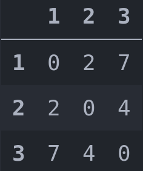

Genetics
The main advantage of this Genetic algorithm over others solutions are: * Easy to learn and to use, inspired in Scikit Learn library. * Amazingly fast, builted in Cpython results with 400 populations and more than 1000 generations are done in less than a half of a second.. * Very well documented.
Genetic Algorithm is a metaheuristic aproach wich mean is not deterministic, this lead that every time you run the result could be different but will be very near of the global optimum.
This algorithm is called Genetic because is based in the Darwyn Theory of Evolution and the natural selection. This theory mainly says that in a population of individuals, the best ones have more probabilities to survive than others.. This in our problems mean that we have one initial random route (individual), from this initialization we create a list of random routes (random population), we are now in the generation 0. so the routes (individuals) of this population, as happend in reality, have the probability of mix one routes wich others and create new routes (have children), and this new routes will have mutations and crossover for each pair of routes (parents) (they have genetics modifications). So one time that all routes of the initial list of routes (random population) have pass through this phase (or not it's depend if they have childrens or not), we will finish the generation. when we finish the generation the worst route/s (individuals) will be replaced by the best route/s (this is the natural selection, the worst individuals die.) and will start the next generation with the new routes. And this will be repeated a number X of times (generations).
Genetic
Hyper - Parameters
sklearn_route.metaheuristics.genetics.Genetic(p_c=0.6, p_m=0.4, pop=400, gen=1600, k=3, early_stopping=None, max_time_work=8.0, extra_cost=10.0, people=1)
-
p_c: float32, default=0.7Between 0 and 1 the probability of crossover. In each generation at start the algorithm generate two random probabilities these random probabilies are the choosen when crossover will take place. If the random number is 4 that mean that the number in position and the following numbers will be now at start. And the first four numbers will be at the end. If this ratio is very low (for example 0.1) will mean that a few new routes will be introduced (no childs in the population), so the optimization will take more time, but the algorithm will be more stable. Instead if it's too hight (for example 0.9) will mean that the majority of the population will be changed per generation (new childs) this will lead to a fast optimization but will be more inestable so the algorithm could not converge.
-
p_m: float32, default=0.4It's mutate, random probabilies are choosen when it will take place. If the random numbers are 2 and 8 for example, the numbers located at that index will swap positions.
The same as croosover (p_c) a higher numbers (0.9) will lead to a lot of variation and a faster optimization in the routes (children) but also can make that the algorithm could never converge.Instead lower numbers will lead to a more stable algorithm but the alogorithm will be very slow to converge. -
pop: int32, default=400The number of population (different random solutions), more population, more probabilities to find different solutions but make the algorithm more time expensive. If the number is too low, the solution will be bad, because the algorithm can't iterate over the loss function with the enough amount of data
-
gen: int32 Default=1000The number of generations. More generations make the algorithm achieve better solution but also make the algorithm take more time. This can be solved with early_stoping parameter to make the algorithm stop when is not improving. If the number of generation is low the algorithm may not converge.
-
k: int32, default=3The number of individual populations (solutions) that will fight for being the best. When we are inside of a generation the algorithm take a subsample of numbers k. The best k (individual) solution is choosen as a parten for this generation.
-
early_stopping: int32, default=NoneIf it's None, the algorithm will finish when the last generation is performed. If it's other unsigned integer (positive integer number) if the algorithm can't improve the result while X generations (where x is early_stopping number) the algorithm will stop.
-
max_time_work: float32, default=8The number of ours that a employ can work per day. For example if it's 8 hours, the algorithm will force that a route have to finish after the 8 hours have been completed, making the employeed come back home. it's a time constraint.
-
extra_cost: float32, default=0If it's 0 anything happend. If it's > 0 in combination with max_time_work when the max_time_work is reached, extra_cost is applied. This add a extra cost to the solution each time that max_time_work is reached. It's like extra pay for the worker each time max_time_work is completed (journey).
-
peopleint32, default=1The number of people that you use in each route, for example if you need two truck drivers. that's another contstraint. That will multiply the time_costs and the extra_cost. Not the travel cost because it's assumed that both go in the same vehicle.
Method
.fit(route_example, time_costs, fuel_costs):This method train the algorithm, we need to pass the following data:
1. route_example: Is a list random route to initiate the algorithm. 2. time_cost: it's a dict of dicts that represent a diagonal matrix with the times between all points 3. fuel_cost: it's a dict of dicts that represent a diagonal matrix with the costs between all points
Attribute
history_:it's a list with the best cost in each generation. The loss function.
Example with Genetic Algorithm.
from sklearn_route.datasets import load_barcelona
from sklearn_route.preprocessing import matrix_to_dict
from sklearn_route.metaheuristics.genetics import Genetic
df_barcelona = load_barcelona()
#Dataset - id of origin - id of destiny - column to transform (in this case the hour)
time_matrix = matrix_to_dict(df_barcelona, "id_origin", "id_destinity", "hora")
#Dataset - id of origin - id of destiny - column to transform (in this case the cost)
cost_matrix = matrix_to_dict(df_barcelona, "id_origin", "id_destinity", "hora")
#Create a random route, it's will needed to initiate the algorithm
route_example = list(dict.fromkeys(cost_matrix_df).keys())
#Instantiate the algorithm
ga = Genetic(p_m = 0.3, pop=400, gen=2000, k=5, p_c early_stoping=100,
max_time_work=6, extra_cost=12.83)
#random route - time_matrix - cost_matrix
result = ga.fit(route_example, time_matrix, cost_matrix)
#Printing the best route
print(result)
#Printing the loss function
print(ga.history_)
Understunding the data needed by the algorithm
The dicts of dicts time_cost and fuel_cost, are dicts of dicts for performance reason. these dicst could be also represented as diagonal symmetric matrix, columns and index represent the cost of the point. Here an example:
easy_route = {
1:{
1:0,
2:x
3:y
},
2:{
1:x,
2:0,
3:z
},
3:{
1:y,
2:z,
3:0
}
}
#We can see clearly the matrix with pandas
import pandas as pd
#Visualice the diagonal symmetric matrix
print(pd.DataFrame(easy_route))
Output:

It's important to understund that the cost matrix must be the computation of all the costs that the user of the algorithm want to take in count per person. In the majority of cases the cost will be composed by:
- The cost of the fuel for one person to go from one point to another.
- The cost of the hours of work needed from one point to another.
If we have multiple persons doing the same route, the people parameter will multiply the cost by the number of persons and will increase the cost with the extra_cost in case of the max_time_work paremeter will be surpased.
Also note that extra_cost could be used as a maximun capacity of a truck for example in the case of material transports problems.
The other dict of dicts time_matrix parameter will be only used by the algorithm to compute the max_time_work and compute the final route of the algorithm with the times that the salesman/truck have finished their journey.
Ensemble Genetic
sklearn_route.genetics.EnsembleGenetic(n_genetics=10, p_c=0.6, p_m=0.4, pop=400, gen=1600, k=3, early_stopping=None, max_time_work=8.0, extra_cost=10.0, people=1, n_jobs=1)
Ensemble Genetic is a bagging of Genetics models, so you can refer to the documentation above to see how it works. Basically are a X number of Genetics estimator, this will help to get a better result than the Genetic Algorithm, the computationall cost will depend of the number of workers (n_jobs) you use. In the case you use the same n_jobs as n_genetics you will achieve the results in less than a second.
As said above, the algorith is pretty much the same, so here there are only the new hyper parameters.
Hyper - Parameters.
n_genetics: int, default=10The number of Genetics algorithm that will be thrown. The more algorithms better result could be achieve, but's will be computationally more expensive (this can be solved/mitigated with the n_jobs parameter)
n_jobs: int, default=1The number of workers (threads) that will use the algorithm in parallel, by default is one, and must be at least one to the algorithm run. Use this parameter with caution, maybe can collapse the computer if you select a lot jobs.
Example with Ensemble Genetic Algorithm
from sklearn_route.datasets import load_valencia
from sklearn_route.preprocessing import matrix_to_dict
from sklearn_route.genetics import EnsembleGenetic
df_valencia = load_valencia()
#Dataset - id of origin - id of destiny - column to transform (in this case the hour)
time_matrix = matrix_to_dict(df_valencia, "id_origin", "id_destinity", "hora")
#Dataset - id of origin - id of destiny - column to transform (in this case the cost)
cost_matrix = matrix_to_dict(df_valencia, "id_origin", "id_destinity", "cost")
#Create a random route, it's will needed to initiate the algorithm
route_example = list(dict.fromkeys(cost_matrix_df).keys())
#Instantiate the algorithm with 18 genetis algorithm and 6 jobs
eg = EnsembleGenetic(n_genetics=18, p_m = 0.4, pop=400, gen=2000, k=5, early_stoping=100,
max_time_work=6, extra_cost=12.83, n_jobs=6)
#random route - time_matrix - cost_matrix
result = eg.fit(route_example, time_matrix, cost_matrix)
#Printing the best route
print(result)